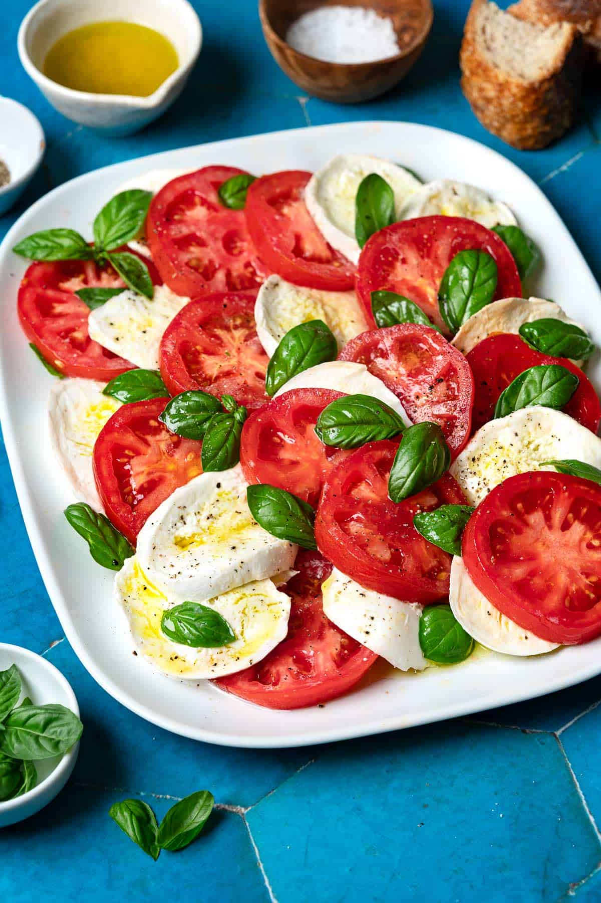

Caprese Salad

A simple Italian salad of ripe summer tomatoes, creamy fresh mozzarella, and fragrant basil, dressed with good olive oil.
2(8 oz) balls whole milk mozzarella in brine2 lbs / 900gripe salad or heirloom tomatoes (such as Beefsteak, Big Boy, or Purple Cherokee)- fine sea salt
1handful basil leaves (smaller, more tender leaves preferred)3 tbspbest-quality extra virgin olive oil- freshly ground black pepper
- flaky sea salt, optional
Drain the mozzarella: Remove the balls of mozzarella from the brine and let them drain on a clean kitchen towel or paper towels for 15 minutes. Lightly pat the mozzarella and slice it into ¼-inch-thick slices.
Slice the tomatoes: Using a serrated knife, slice the stem end off the tomatoes. Cut the tomatoes into slices about ⅜-inch thick, slightly thicker than the mozzarella. You’ll need 12 slices, not including the ends (discard the ends or eat them as a snack!). Lay the slices out on the cutting board and sprinkle with fine sea salt.
Layer the salad: Arrange the tomatoes and mozzarella on a serving plate so that they are overlapping slightly. Tuck in the basil leaves between the slices, and sprinkle or arrange a few more on top.
Season: Drizzle the olive oil over the salad and grind a little black pepper on top. Let the salad rest briefly—no more than 5 to 10 minutes. Right before serving, sprinkle a pinch of flaky sea salt on top (optional). Serve immediately.